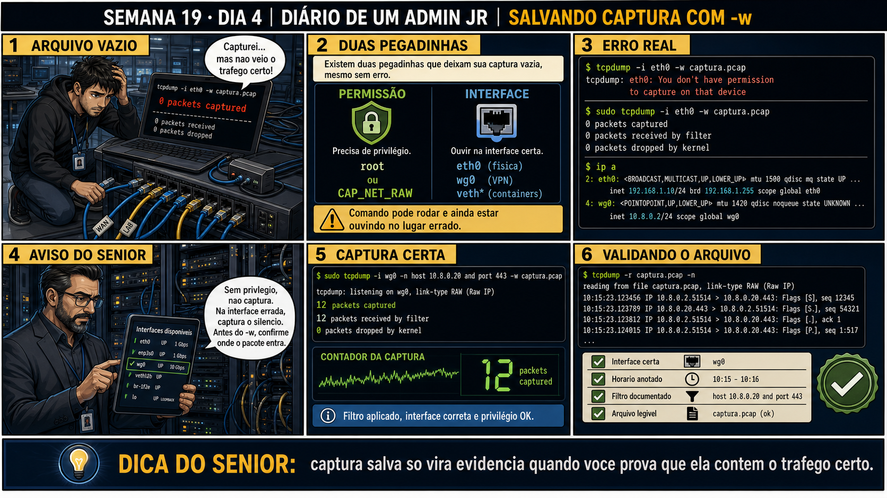

Semana 19 · Dia 4 | Nível Júnior — Redes
Salvando Captura em Arquivo
uma captura salva em arquivo é uma evidência; uma captura só na tela é uma lembrança
ANTES DE ALTERAR, OBSERVE. DEPOIS DE ALTERAR, VALIDE.
1. O chamado
#1904
PRIORIDADE MÉDIA
23:50
aberto por: plantão noturno, registrado por e-mail
host: srv-app-05 · serviço: job noturno de sincronização
"O bug só acontece de madrugada, quando ninguém está de plantão pra ficar olhando o terminal ao vivo."
Você não pode ficar acordado a noite toda. Qual é o plano?
💡 Passa o mouse nas palavras destacadas pra ver uma dica rápida — clica se quiser a explicação completa com analogia.
2. Antes de ver as opções — tenta responder
🧠 Recall ativo: qual é a diferença prática entre rodar tcpdump normalmente (imprimindo linhas no
terminal) e rodar com -w arquivo.pcap?
Sem -w, o tcpdump traduz cada pacote pra uma linha de texto legível e imprime direto no terminal, mas não
guarda nada depois que a tela rola pra frente. Com -w arquivo.pcap, ele grava os pacotes BRUTOS num
arquivo binário, sem nem mesmo mostrar nada no terminal por padrão — e esse arquivo pode ser reaberto
depois com -r, quantas vezes precisar, sem perder nenhum detalhe do momento original da captura.
3. Questão comentada — clica numa alternativa
Você precisa deixar uma captura rodando a noite inteira numa VM, salvando tudo
num arquivo pra analisar de manhã, sem precisar ficar olhando o terminal ao vivo. Qual comando faz isso?
💡 Analogia do Sênior para Fixar: O princípio fundamental de 04 TCPDUMP SALVAR ARQUIVO é como o alicerce de sustentação de um viaduto: garante que a estrutura de comunicação suporte alto tráfego sem colapsar.
4. Decodificador de conceitos
Clica em qualquer termo pra ver a definição completa e uma analogia do dia a dia:
5. Ferramentas e leitura da evidência
| Comando | O que faz |
|---|---|
tcpdump -i eth0 -w arq.pcap | Captura na interface e grava tudo num arquivo binário. |
tcpdump -r arq.pcap | Lê um arquivo .pcap já existente, exibindo como se fosse ao vivo. |
tcpdump -r arq.pcap host X | Reaplica um filtro sobre um arquivo já capturado. |
$ sudo tcpdump -i eth0 -w /var/log/captura_1904.pcap & [1] 8821 $ jobs [1]+ Running tcpdump -i eth0 -w /var/log/captura_1904.pcap & --- na manhã seguinte --- $ kill 8821 $ tcpdump -r /var/log/captura_1904.pcap 14:50:01 IP cliente.51500 > servidor.443: Flags [S], seq 1000, win 64240, length 0 14:50:01 IP servidor.443 > cliente.51500: Flags [S.], seq 5000, ack 1001, win 65160, length 0 14:50:01 IP cliente.51500 > servidor.443: Flags [.], ack 5001, win 502, length 0 --- reaplicando filtro sobre o arquivo já salvo --- $ tcpdump -r /var/log/captura_1904.pcap host 10.10.10.50 2 packets read from file
5.1 O painel 4 da prancha de hoje mostra o técnico esquecendo de limitar o tamanho da captura numa VM com pouco espaço em disco
Um colega deixa tcpdump -w captura.pcap rodando por dias numa VM com pouco espaço livre, sem nenhum limite de tamanho ou tempo.
Qual é o risco real de deixar uma captura -w rodando indefinidamente, sem
nenhuma flag de limite, numa VM com disco limitado?
💡 Analogia do Sênior para Fixar: Diagnosticar anomalias em 04 TCPDUMP SALVAR ARQUIVO é como o eletricista usando o multímetro no quadro de disjuntores: mede a passagem de sinal no ponto exato da falha.
5.2 "Posso abrir o arquivo .pcap direto num editor de texto?"
Um colega tenta abrir um arquivo .pcap com cat ou num editor de texto comum e vê só caracteres ilegíveis.
Por que um arquivo .pcap não pode ser lido diretamente como texto simples?
💡 Analogia do Sênior para Fixar: Aplicar as boas práticas de 04 TCPDUMP SALVAR ARQUIVO é como o protocolo de segurança da aviação: elimina pontos únicos de falha e garante previsibilidade operacional.
6. Procedimento profissional
- Use -w <arquivo>.pcap pra gravar a captura em formato binário, em vez de só imprimir na tela.
- Rode em background com & (ou dentro de um screen/tmux) quando precisar deixar rodando sem terminal ativo.
- Considere -C (tamanho máximo por arquivo) ou -G (rotação por tempo) em capturas longas, pra não encher o disco.
- Reabra com -r <arquivo>.pcap depois, aplicando os mesmos filtros de host/port que quiser.
- Nomeie o arquivo com data e contexto do chamado, pra facilitar encontrar depois.
7. Laboratório guiado — marca conforme for testando
Segurança: execute os testes apenas em VM descartável e confirme nomes de discos, hosts e arquivos antes de cada comando.
- Rode tcpdump -i eth0 -w teste.pcap enquanto gera algum tráfego (curl, ping).$ sudo tcpdump -i eth0 -w ~/teste.pcap # em outro terminal: $ ping -c 5 8.8.8.8
🔍 Detalhar esse comando
- sudo tcpdump -i eth0
- Captura na interface eth0, como nos dias anteriores.
- -w ~/teste.pcap
- Em vez de traduzir cada pacote pra uma linha de texto e imprimir na tela, grava os pacotes BRUTOS (binário) direto nesse arquivo — nada aparece no terminal enquanto -w está ativo.
Resultado esperado: arquivo teste.pcap criado, com tamanho maior que zero.Se o seu resultado foi diferente
O arquivo foi criado mas com 0 bytes → confirme que o tráfego gerado (o ping) realmente passou pela interfaceeth0e não por outra — testar contralocalhost, por exemplo, gera tráfego na interfacelo, não emeth0. - Interrompa a captura e reabra o arquivo com tcpdump -r teste.pcap.^C $ sudo tcpdump -r ~/teste.pcap
🔍 Detalhar esse comando
- ^C
- Interrompe a captura ao vivo iniciada no passo anterior.
- tcpdump -r ~/teste.pcap
- Lê (replay) um arquivo .pcap já gravado, reproduzindo as linhas de tráfego como se fosse uma captura ao vivo.
Resultado esperado: as mesmas linhas de tráfego aparecendo, como se fosse ao vivo.🧑🏫 Aqui entra o Mentor (em breve): se quiser abrir esse mesmo arquivo visualmente no Wireshark depois, este é o ponto onde o chat com o Sênior-IA vai te mostrar o próximo passo. - Reaplique um filtro host ou port sobre o arquivo já salvo, com tcpdump -r teste.pcap host <ip>.$ sudo tcpdump -r ~/teste.pcap host 8.8.8.8
🔍 Detalhar esse comando
- -r ~/teste.pcap
- Lê um arquivo .pcap já existente e reproduz os pacotes gravados nele, em vez de capturar ao vivo de uma interface.
- host 8.8.8.8
- Filtros normais (host, port, and/or) funcionam exatamente igual sobre um arquivo já salvo — você pode reaplicar quantos filtros diferentes quiser sobre a MESMA captura, sem precisar capturar de novo.
Resultado esperado: só as linhas relevantes ao filtro aparecem, mesmo lendo de um arquivo já pronto. - Tente abrir o mesmo arquivo com cat teste.pcap e observe o conteúdo ilegível.$ cat ~/teste.pcap
🔍 Detalhar esse comando
- cat
- Concatena e imprime o conteúdo de um arquivo diretamente no terminal.
- ~/teste.pcap
- Arquivo binário (não texto) gravado pelo tcpdump — cat não sabe interpretar esse formato, por isso mostra caracteres ilegíveis em vez do tráfego decodificado.
Resultado esperado: caracteres binários sem sentido no terminal, confirmando que não é texto simples.Se o seu resultado foi diferente
O terminal trava, mostra caracteres estranhos ou emite bips → normal — são bytes binários sendo interpretados como caracteres de controle pelo terminal. Pressione Ctrl+C pra recuperar o terminal e usetcpdump -roufile ~/teste.pcapem vez decatpra inspecionar o arquivo com segurança. - CENÁRIOAção: Remova o arquivo de captura de teste e confirme que não sobrou nada na VM.$ rm ~/teste.pcap $ ls ~/teste.pcap 2>/dev/null || echo "arquivo removido"
🔍 Detalhar esse comando
- rm ~/teste.pcap
- Remove o arquivo de captura de teste do disco.
- ls ~/teste.pcap 2>/dev/null
- Tenta listar o arquivo já removido, descartando a mensagem de erro (redirecionada para /dev/null).
- || echo "arquivo removido"
- Executa esse echo só quando o ls anterior falha (arquivo não existe mais) — confirma visualmente a remoção.
Resultado esperado: a mensagem "arquivo removido" — nenhum arquivo de captura esquecido na VM.Por que fizemos isso: um .pcap esquecido no disco não é tão sensível quanto uma senha, mas pode conter tráfego real capturado (inclusive de outros serviços rodando na mesma VM). Encerrar o laboratório sem deixar arquivo de captura pra trás é a mesma disciplina de "ZERO mudança no sistema" que vale pra qualquer teste — não é exclusiva de disco ou processo.Cilada comum: esquecer que pode haver um processo tcpdump ainda em segundo plano gravando nesse arquivo. Confirme compgrep tcpdumpantes de apagar, ou o arquivo volta a crescer sozinho depois de removido.Se o seu resultado foi diferente
"rm: cannot remove '~/teste.pcap': Permission denied" → o arquivo foi criado comsudo tcpdump -w, então pertence a root. Usesudo rm ~/teste.pcap.
8. Validação e encerramento
- -w grava a captura em arquivo binário; -r reabre esse arquivo depois.
- Filtros podem ser reaplicados sobre um arquivo já salvo, não só ao vivo.
- Capturas longas sem limite de tamanho podem encher o disco — -C e -G existem pra evitar isso.
- Um arquivo .pcap é binário, não texto — precisa de tcpdump -r ou Wireshark pra ser lido.
Rollback e limites
Apagar um arquivo .pcap depois de analisado é seguro e reversível só até o ponto
de exclusão — depois de apagado, a evidência daquele momento específico não pode ser recriada, só uma nova
captura futura. Por isso, é boa prática manter capturas relevantes de incidentes arquivadas por um tempo antes
de descartar.
💡 Sobre repetição espaçada: "captura salva é evidência; captura só na tela é
lembrança" conecta com qualquer disciplina de log e auditoria que você já viu no curso — documentar não é
burocracia, é sobrevivência de diagnóstico. O Anki vai reforçar esse princípio.
9. Resposta final
Alternativa correta: A. Nesta aula, o comando certo pra deixar uma captura
rodando sem monitoramento ao vivo foi tcpdump -i eth0 -w captura.pcap. O ponto central do caso é este: uma
captura salva em arquivo é uma evidência; uma captura só na tela é uma lembrança.
🔓 O que você desbloqueou hoje
Capacidade de capturar tráfego pra arquivo e reabri-lo depois com filtros.
Amanhã fecha a Semana 19 com o cenário mais realista: investigar se um pacote específico realmente chegou (ou
não) num servidor, usando tudo que você aprendeu essa semana.